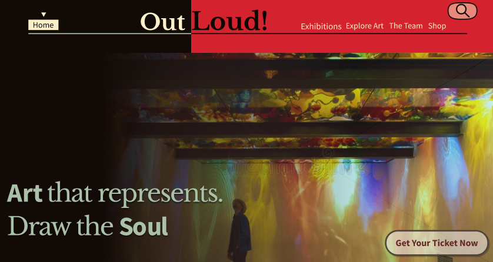

OutLoud!
Website case study
This case study focuses on creating a website for "Out Loud!" to promote artists and their artworks, aiming to engage and politically awaken youth of color in New York by encouraging them to attend gallery openings and events.
